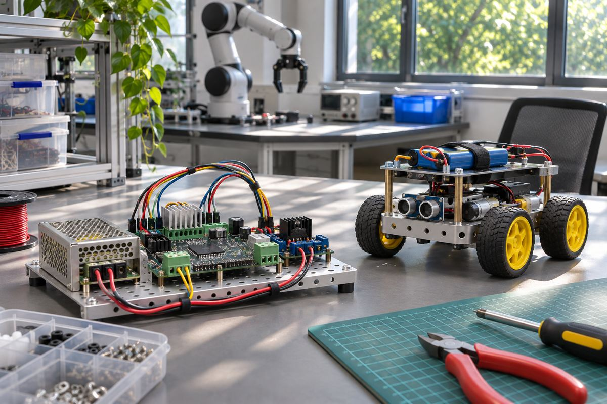

전자기기 / EXPLAINED
NXP, 로봇용 통합 플랫폼 공개…드론 초기 기능 30분 시연 경로
공개 SDK와 참조 설계로 센싱·AI·모터 제어를 연결한다. ‘30분’은 완제품 개발 기간을 뜻하지 않는다.

NXP가 11월 9일 로봇의 감지, 실시간 제어, AI 처리와 통신을 연결하는 통합 플랫폼을 발표했다. 기반은 Neural Axis Architecture라는 분산 구조다. 모듈형 오픈소스 소프트웨어 개발 키트와 미리 연동을 검증한 참조 설계를 제공해 개발자가 기능을 조립하는 작업을 지원한다. 회사는 해당 설계와 SDK로 드론의 초기 기능을 개봉 후 30분 안에 구동할 수 있다고 설명했다. 이는 지정된 개발 구성의 시작 단계에 관한 회사 주장이다.
NXP는 자동차와 산업용 제어, 연결 장치 등에 쓰는 반도체를 공급한다. 로봇에서 큰 연산을 하는 처리기와 모터를 일정한 시각에 제어하는 부품은 요구 조건이 다르다. 센서를 읽고 주변을 해석하는 부분, 움직임을 명령하는 부분, 전력을 공급하는 부분을 여러 부품이 나눠 맡는다. 이번 플랫폼은 이 여러 기능을 서로 맞는 하드웨어와 소프트웨어 구성으로 제공하는 데 초점을 둔다. 특정 칩 하나가 로봇의 모든 작업을 대신한다는 구조가 아니다.
첫 참조 설계는 드론에 맞춰졌다. 자율 연산에는 i.MX 95 기반 NavQ95를, 비행 관리에는 i.MX RT1064 기반 Tropic VMU/FMU를 제시했다. 센서 연결에는 MCX N947을 사용하는 100Base-T1 Sensor Node, 모터 제어에는 MCX A13 기반의 AM32 호환 전자식 속도 제어기를 포함한다. 전자식 속도 제어기는 모터에 보내는 전력을 조절하는 회로다. 이 목록은 서로 다른 역할에 맞는 처리기와 제어기를 조합한다는 예를 보여 준다.
개발 출발점과 검증의 간격
SDK는 드라이버와 예제, 기능을 연결하는 소프트웨어를 제공한다. 참조 설계가 이미 연동돼 있으면 처음부터 통신을 맞추는 작업을 줄일 수 있다. 다만 카메라나 모터, 배터리를 다른 부품으로 바꾸면 다시 확인할 조건이 생긴다. 30분이라는 수치에는 사용자가 새 기구를 설계하고 센서를 보정하며 비행 조건을 검증하는 전체 시간이 포함됐다고 설명되지 않았다. 제품 기획 단계의 납기 기준으로 그대로 쓰기 어렵다.
서비스 로봇과 자율 시스템으로 지원을 확대한다는 계획도 공개됐다. 드론의 자세 제어와 바닥을 달리는 로봇의 장애물 대응은 물리 조건과 고장 양상이 다르다. 편집부의 해석으로는 공통 소프트웨어와 연결 구조를 재사용할 수 있어도 각 용도에 필요한 반응 시간과 안전 동작은 따로 검증해야 한다. 공개 SDK라는 이름만으로 지원 범위 전체가 이미 완성됐거나 모든 보드가 즉시 구매 가능하다고 판단해서는 안 된다.
초기 예제를 실행한 뒤에는 통신이 끊기거나 센서 값이 늦게 도착하는 경우의 동작도 점검해야 한다. 데이터가 올 때까지 기다릴지 모터 출력을 줄일지는 제품 용도에 따라 설계할 부분이다. 예제 성공과 이런 예외 조건의 검증은 서로 다른 평가 항목이다.
개발자는 우선 지금 제공되는 설계의 목록과 보드 버전, 필요한 펌웨어를 맞춰 볼 수 있다. 그 다음 센서 주기와 통신 지연, 전원 변동 때의 모터 응답을 자신의 장치에서 평가해야 한다. 발표에는 모든 지역의 키트 가격과 배송일, 서비스 로봇 지원의 세부 완료 일정이 없다. 통합 플랫폼 발표일과 개별 하드웨어의 주문·지원 가능 상태를 구분하면 개발 계획을 더 현실적으로 세울 수 있다.